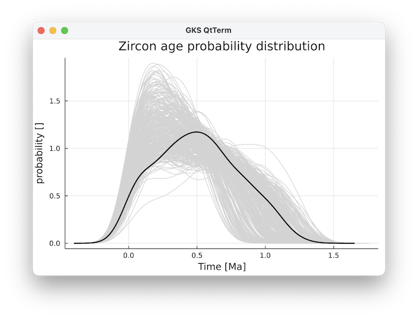

Zircon age parameterizations
Methods
Zircons are one of the ways in which we can date the age & activity of magmatic systems. Here, we provide a computational routine that computes the zircon age distribution from temperature-time paths
GeoParams.ZirconAges.ZirconAgeData — TypeZirconAgeDataStruct that holds default parameters for the calculations
Computational routines
There is one main routine with which you can compute zircon age probability density functions from a range of temperature-ime paths:
GeoParams.ZirconAges.compute_zircon_age_PDF — Functiontime_Ma, PDF_zircons, time_Ma_average, PDF_zircon_average, time_years, prob, ages_eruptible, number_zircons, T_av_time, T_sd_time, zircon_cumulativePDF = compute_zircon_age_PDF(time_years_vecs::Vector{Vector}, Tt_paths_Temp_vecs::Vector{Vector}; ZirconData::ZirconAgeData = ZirconAgeData(), bandwidth=bandwidth, n_analyses=300)This computes the PDF (probability density function) with zircon age data from Vectors with Tt-paths
This, in turn, calls two other routines:
GeoParams.ZirconAges.compute_zircons_Ttpath — Functiontime_years, prob, ages_eruptible, number_zircons, T_av_time, T_sd_time, zircon_cumulativePDF = compute_zircons_Ttpath(time_years::AbstractArray{Float64,1}, Tt_paths_Temp::AbstractArray{Float64,2}; ZirconData::ZirconAgeData)This computes the number of zircons produced from a series of temperature-time path's. The Tt-paths are stored in a 2D matrix Tt_paths_Temp with rows being the temperature at time time_years.
Input:
time_years: vector of lengthntwith the time in years (since the beginning of the simulation) of the points providedTt_paths_Temp: array of size(nt,npaths)` with the temperature of every path.
Output:
prob: a vector that gives the relative probability that a zircon with a given age existsages_eruptible: age of eruptble magmanumber_zircons: 2D array of size(nt,)T_av_time: vector of sizentthat contains the average T of the pathsT_sd_time: vector of sizentthat contains the standard deviation of the T of the pathszircon_cumulativePDF: vector of sizentthat contains cumulative probability density of zircon ages [%]
This routine is based on an R-routine provided as electronic supplement in the paper:
- Weber, G., Caricchi, L., Arce, J.L., Schmitt, A.K., 2020. Determining the current size and state of subvolcanic magma reservoirs. Nat Commun 11, 5477. https://doi.org/10.1038/s41467-020-19084-2
time_years, prob, ages_eruptible, number_zircons, T_av_time, T_sd_time, zircon_cumulativePDF = compute_zircons_Ttpath(time_years::Vector{Vector{Float64}}, Tt_paths_Temp::Vector{Vector{Float64}}; ZirconData::ZirconAgeData = ZirconAgeData())This accepts Vector{Vector} as input for time and temperature of each Tt-path. Here, the length of the vector can be variable between different points.
Internally, we interpolate this into a 2D matrix and a longer vector that includes all paths and a single vector with times
GeoParams.ZirconAges.zircon_age_PDF — Functionzircon_age_PDF(ages_eruptible::AbstractArray{Float64,1}, number_zircons::AbstractArray{Float64,2}, bandwidth=1e5, n_analyses=300)Compute probability density functions for zircon age path's describes in number_zircons with age ages_eruptible (both computed ). bandwidth is the smoothening window of the resulting curves (in years), whereas n_analyses are the number of analyses done.
We also provide a plotting routine, provided the Plots package is loaded, which produces figures such as: 